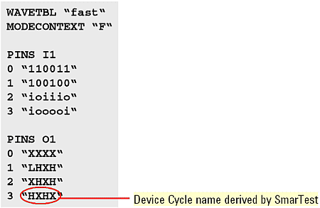
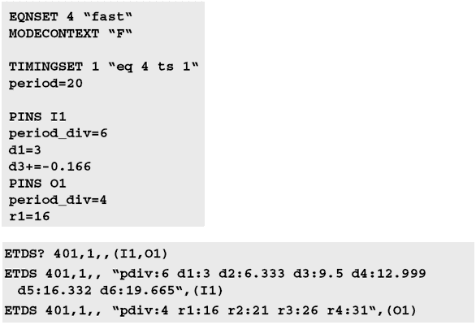
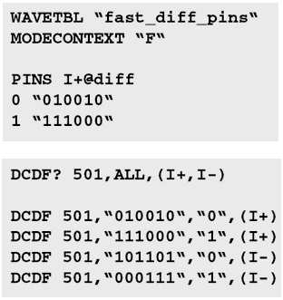
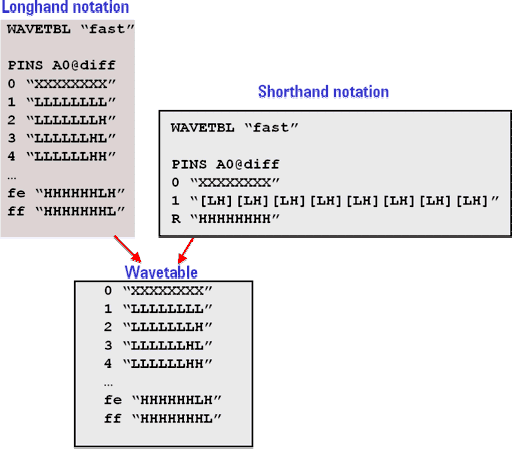
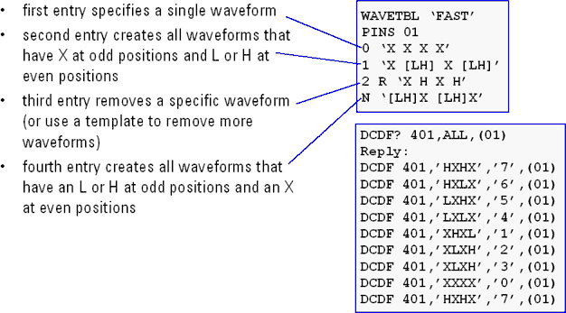
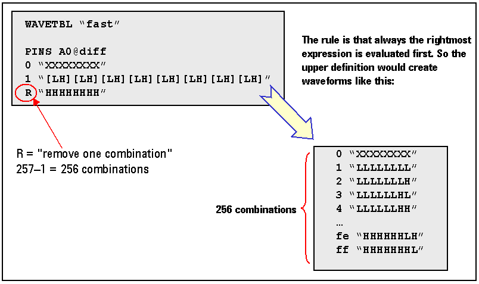

Specifying waveforms for FAST pins
For FAST pins, you use a special notation with the following characteristics:
- Basically a sequence of actions without edge specifications
- SmarTest selects the edges and distributes them equidistantly within one period length
- Length of action sequence: 1, 2, 3, 4, 6 or 8
- Permitted drive actions: 0, 1, i, o
- Permitted receive actions: L, H, X
- Device cycle name cannot be specified by the user, the name is derived by SmarTest.
- Wavetables can contain a maximum of 256 waveforms
This is illustrated in the figure below.

For the edge delay,
- period_div specifies number of edges
- edges are equidistantly distributed
- offset for first edge can be set
- offset for other edges (on top of calculated edge position) can be set
Edge delays for FAST pins are calculated by SmarTest from the period length, number of actions, and an initial delay which you specify for the edges d1 to r1.
The number of edges is specified with the period_div statement.
A different number can be specified for the same pin in each timing set of the same equation set.
The figure below illustrates a wavetable and the corresponding firmware commands, showing the edge placement.

When defining the waveform format consider the following:
- Use the @diff qualifier on the positive pin (to define the positive and negative pins of a differential channel).
- Omit the negative pin (waveforms for the negative pin are created automatically).
- Note that requirements for differential pin pairs must be fulfilled (see PS5000 differential pin pair assignment).
Waveforms for pins of a differential pin pair with the same index contain inverted action sequences.
The figure below shows an example of such a waveform format and the associated firmware commands.

You can use either the long hand notation or the shorthand notation. The figure below shows the two notations that produce the same wavetable.

Algorithmic Generation of Waveforms (FAST pins)
The figure below explains how the waveforms are generated

The figure below shows how to request the system to generate all possible combinations of L and H. This leads to 28=256 combinations.
Since we add the mask "xxxxxxxx", we need to remove one waveform (here:HHHHHHHH) to stay within the limit of 256 waveforms.

Functional changes
- Introduced in SmarTest 7.10.3